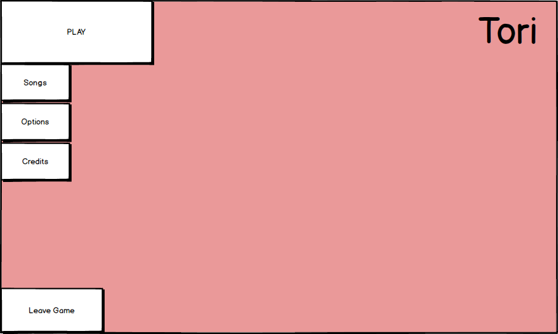
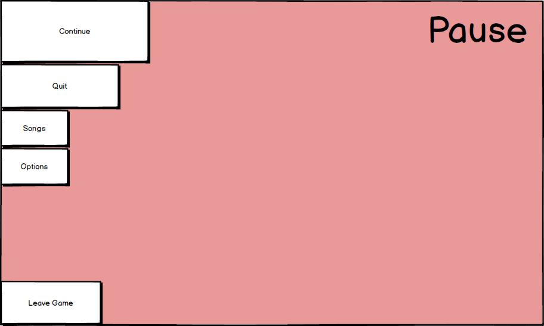

Play-testing is essential for understanding how players interact with your game and
finding flaws that you may have been unable to see yourself.
This is why I conducted weekly play-test sessions, allowing the general public to play and give their feedback.
I collected qualitative data by taking notes about what each player was doing at any given moment as they played.
I also took note any time anyone said something of note, such as "Oh, inverted controls. I wasn't expecting that."
These notes can offer valuable insight into what the player is doing and thinking as they play, as opposed to what they think about the game after playing.
Play-testing is essential for understanding how players interact with your game and
finding flaws that you may have been unable to see yourself.
This is why I conducted weekly play-test sessions, allowing the general public to play and give their feedback.
Developing Quick Wire-Frames
As a UX Designer working on Tori, I design the UI, control schemes, and menu screens.
I use a program called Balsamiq to whip up quick and easy-to-test wire-frames.
These wire-frames are the bear-bones, first-pass mock-ups of the the user interface that will eventually make it into the final product.


As of right now, I am testing and improving upon the menu screen mock-ups until we are happy with the layout. Once a layout passes through this process,
I will add art to it and begin the next steps of testing the aesthetic appeal of the layout. Designing menus in this manner prevents wasted time and
back-tracking, since these mock-ups only really take a few minutes each to create.
I have also used these mock-ups to demonstrate control systems and UI art and functionality.
For example, there is a system in which the bird can collect up to 5 musical auras, known in the game as "Kami," and fly around with them.
We wanted to display the carrying capacity for this within the game world, rather than pasting it on some sort of HUD.
I used a mock-up to display what this display would approximately look like in-game. I decided to use the bird's wings and tail feathers
to act as a sort of fill bar that represents how "full" the bird is.
Designing Visual/Audio Feedback
In Tori, it's important that the user understands that they have control over the sounds that they hear in the world.
Currently, sounds are being produced by objects in the world. The player is able to collect the sound, or "Kami,"
from the object and fly around with it. By running weekly public play-test sessions, I discovered that players struggled
to grasp the idea that objects were producing the sounds that players were hearing. They understood that there was
something worth collecting, they just didn't know exactly what they were collecting.
In order to tackle this issue, I created a particle burst radiating out from the object. This burst activates as soon as
the sound is played. The immediate correlation between the sound and the visual particle burst demonstrates to the player
that the particles that they are seeing and collecting actually represent the sound that is playing in that moment. Upon
further play-testing, I expect to find data that reveals a higher level of understanding of this sound collection concept.